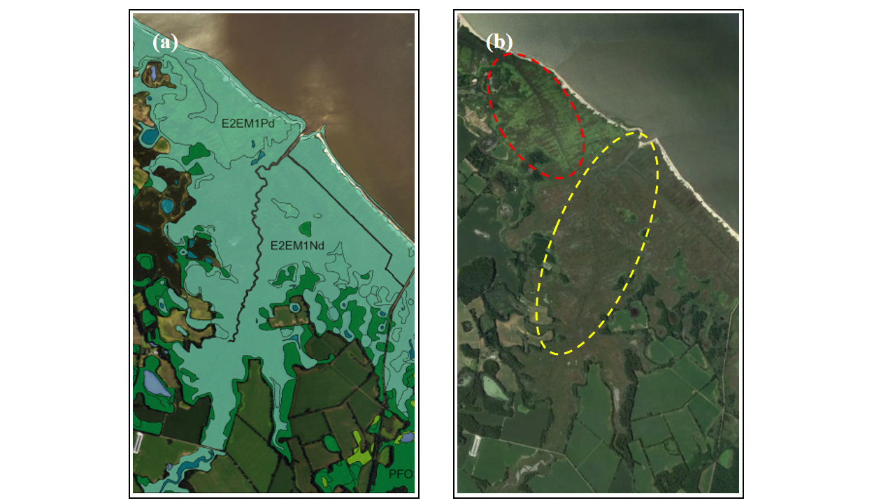

Brockonbridge Salt Marsh Model¶
The study was conducted at Brockonbridge Marsh which is located about 38 km upstream from the mouth of Delaware Bay and covers an area of roughly 10 km^2

Coastal wetlands classification by the National Wetlands Inventory (NWI). The red ellipse area is dominated by Spartina patens and the yellow ellipse area is dominated by Spartina alterniflora.

The marsh types are represented in the model. Spatial distribution of water bodies, marsh types and land area (grey background area) in Brockonbridge Marsh.

Modeled percentage of time that the marsh is inundated.